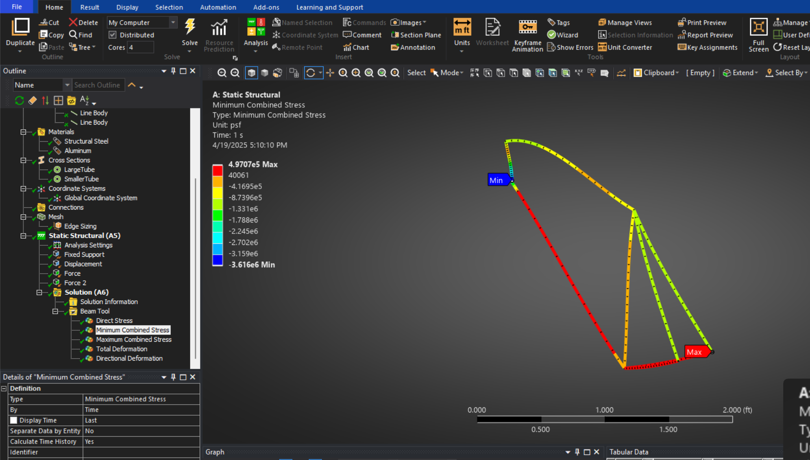

03 / COMPUTATIONAL MECHANICS · SPRING 2025
Bicycle-frame
finite element analysis.
A coursework study of a simplified bicycle frame under static loading in ANSYS.

THE STUDY
The analysis
The study examined a simplified frame with loading intended to represent rider weight and support at the wheel locations. Analysis explored stress, strain, and deformation distributions.
Model and boundary conditions
The report describes an aluminum frame model with a fixed support and a roller constraint. The geometry and support assumptions simplify a physical bicycle and determine how its calculated results should be interpreted.
Scope of the result
This was a static coursework analysis, not a manufactured-frame test or product certification. Dynamic loading, fatigue, and a mesh-convergence study would be additional work.
Project documentation: bicycle-frame analysis report and ANSYS screenshots, spring 2025.